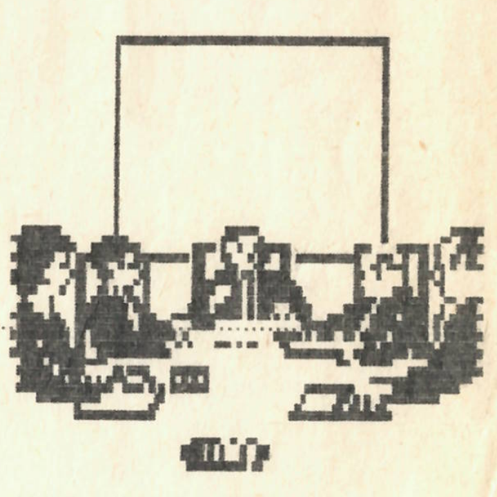

Örömteli szívvel tudatjuk minden kedves olvasónkkal, hogy pénteken, a kora délutáni órákban, a nyíltság és demokrácia jegyében megalakult újságunk új szerkesztősége, felváltva kiskirályi hatalmat gyakorló elődjét. Megújult lapunk új rovatokkal szeretne kedveskedni lelkes olvasótáborának. Fontos szerep jut ezután a számítástechnikának, mellyel Szemethy Tivadar fog foglalkozni. Lesz benne számítástechnikai rejtvény, melynek legügyesebb megoldója jutalomban részesül, és számos meglepetés. Újdonság még az irodalmi rovat, melynek vezetői Galajda Péter, Golden Dániel és Pordán Ferenc. A legfrissebb sporthíreket ezután Molnár Péter és Wágner Endre cikkeiből tudhatjuk meg. A helyesírás érdekességeit két híres szakember: Vágó András és Wágner Endre mutatja be. A szaftos pletykákat három igazi szaktekintély: Péter Viktória, Molnár Mariann és Grigor Zsuzsa tálalja elénk. Izgalmas fizikafeladatokat ezentúl nemcsak testvérlapunkban, a KöMaL-ban olvashatunk; Kárpáti Csaba különleges csemegékkel szolgál olvasóinknak. A Galajda Péter és Szekendy Alajos speciális kenyai horoszkópjaiból megtudhatjuk a jövőnket. A videovilág újdonságairól Virág Csaba és Kolics Bertold számol be. Örömmel vesszük olvasóink észrevételeit; ezekből állítjuk össze Az olvasó írja című rovatunkat.